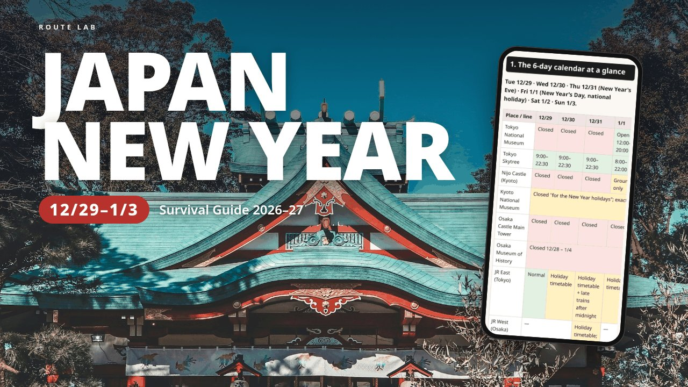

HOLIDAY GUIDE · TOKYO · KYOTO · OSAKA
Japan mostly closes for New Year, and the details change every year. This guide goes through Tue Dec 29, 2026 to Sun Jan 3, 2027 in Tokyo, Kyoto and Osaka: which museums and sights stay open, what runs after midnight on New Year's Eve, when the big shrines are busiest, and where to get cash.
This page is a free outline of the guide. Every fact in the download links to the official page it came from, with the date we checked it.

Nine parts, each one short enough to check on the platform or in the queue at a shrine.
The Toei and Osaka Metro subways, Keihan, Tokyo Metro, the shrines and the department stores haven't published their 2026–27 hours yet. Where that's the case the guide says "check closer to the date" and shows last year's official pattern instead of guessing. Those notices usually appear between late November and mid-December; the guide will be updated then, and you just download it again.
It doesn't book anything, and it isn't a day-by-day itinerary. Schedules can change, so confirm on the day.
US$7 on Gumroad. Personal use: for your own trip and the people you travel with. If the file is broken or won't open, you get a fix or a full refund within 14 days.